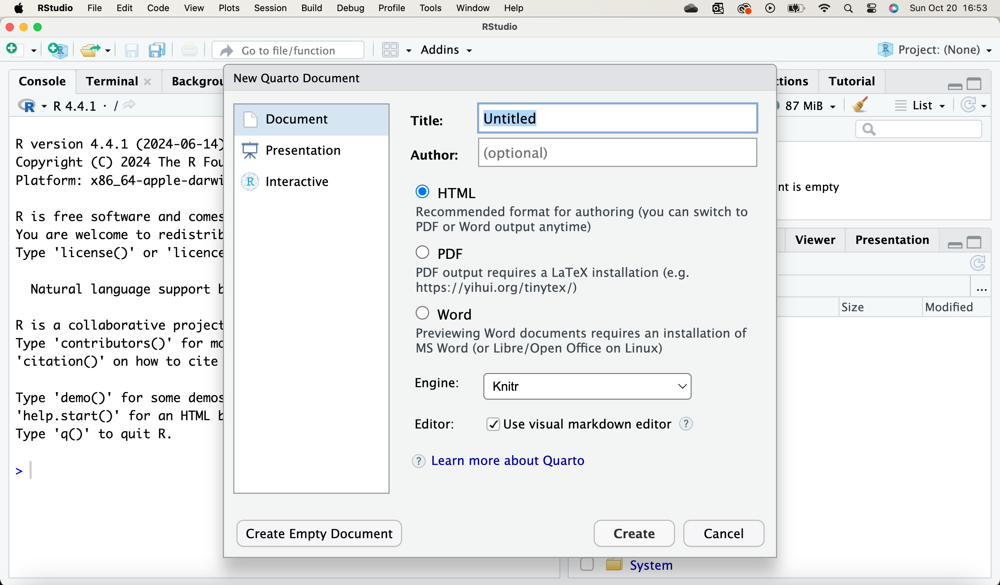
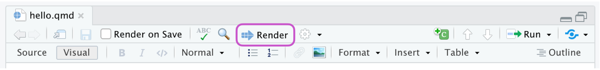
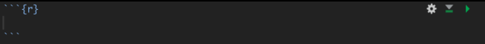

Code
6 + 6Quarto is an open-source scientific and technical publishing system supporting multiple programming languages. It allows seamless integration of code, outputs, and narrative in a single document.
Quarto documents include all code and data analysis steps, which improves understanding and reproducibility for readers. Reproducibility ensures that analyses can be independently verified, enhancing credibility and transparency.

Quarto (.qmd files) is a versatile document format that enables the integration of narrative text, R code, and the results of code execution into a single document. In RStudio, navigate to File > New File > Quarto Document to create a new document.

Initially, this document will be titled Untitled.qmd. Let’s rename it to something more recognizable for future reference. To do so, go to File > Save As, place this new Quarto document alongside your other course materials, and give it a meaningful name.
Once you create and save your Quarto document (.qmd), open it in RStudio, and click on  Render.
Render.
To render the file and preview the output quickly in the RStudio IDE, simply click the  Render button or use the keyboard shortcut (⇧⌘K).
Render button or use the keyboard shortcut (⇧⌘K).

If you prefer to have the file render automatically every time you save, you can enable the “Render on Save” option located on the editor toolbar. This ensures the preview updates each time you re-render the document. The side-by-side preview feature supports both HTML and PDF outputs.

Additionally, more options can be discovered by clicking the gear icon next to the  Render button.
Render button.
When you render a Quarto document, the process begins with knitr executing all the code chunks and generating a new markdown (.md) document that includes both the code and its output. This Markdown file is then processed by Pandoc, which creates the final, polished format. The  Render button automates and organizes these steps, executing them in the correct sequence for you.
Render button automates and organizes these steps, executing them in the correct sequence for you.

During the rendering process, Quarto creates a new file that includes the selected text, code, and results from the .qmd file. This new file can be formatted as an HTML, PDF, MS Word document, presentation, website, book, interactive document, or other formats.
There are 3 main parts of a Quarto document:
The YAML (Yet Another Markdown Language, or YAML Ain’t Markup Language) is located at the top of your document and is enclosed by “—” lines.
YAML is where you can set the content that will appear at the beginning of your compiled document. For instance:
html_document, as it offers the richest format. Your output will be a .html file, which you can save or share.Here’s a simple example:
---
title: "This is my descriptive title"
author: "Horacio Lopez-Nicora"
date: "October 21, 2024"
format: html
editor: visual
---Quarto supports various format types, such as HTML, PDF, and Word documents. In this course, we will focus exclusively on HTML. The example below demonstrates how you can modify the YAML to include a table of contents (toc). The YAML provided below highlights several options available for HTML output.
---
title: "This is my descriptive title"
author: "Horacio Lopez-Nicora"
date: today
date-format: long
format:
html:
toc: true
---A full list of HTML format options can be found at the HTML Options page on the quarto website.
By default, a Quarto document opens in Visual Editor mode. This user-friendly visual interface resembles writing in programs like Word or Google Docs, offering options for clickable buttons such as Bold (or keyboard shortcut ⌘B), Italicize (or keyboard shortcut ⌘I), and adding bulleted lists, among others.
Alternatively, switching to Source Editor mode provides a text-based editor where these buttons are not available. In this mode, familiarity with Markdown syntax is necessary.
Markdown Syntax: see cheatsheet here:https://www.markdownguide.org/cheat-sheet/) or in RStudio Help > Markdown Quick Reference.
Code chunks are sections of your Quarto document designated for executing code. To insert a new code chunk, you can:
Cmd + Option + I (Mac) or Ctrl + Alt + I (Windows).```{r} to start the chunk and ``` to end it, placing your code in between.Code chunks appear as follows:

You place your code on the empty line within the chunk. You can include multiple lines of code in a single chunk; however, if you find yourself needing to scroll through the chunk, it might be too lengthy.
You can also include comments within a code chunk by using the # symbol to comment them out.
# A very interesting comment
Super_Code()When you render your Quarto document, the process will execute all the code within it. This means that if your code contains errors or doesn’t function properly, your document will not be rendered.
In Quarto, you can use inline code to embed code directly within your document’s text. To apply this syntax, simply enclose the expression in backticks. For example:
The sum of 6 and 6 is 12. In this case, 12 was generated with the following inline code `r 6+6`.
You can enhance your code chunks by adding options using #|. This provides R with further instructions on executing your code and compiling your document. HERE are some common examples.
{r}
#| eval: FALSE
#| echo: TRUE
#| code-fold: TRUE
6 + 6This occurs after the code chunk is rendered.
6 + 6Now, let’s edit our Quarto document.